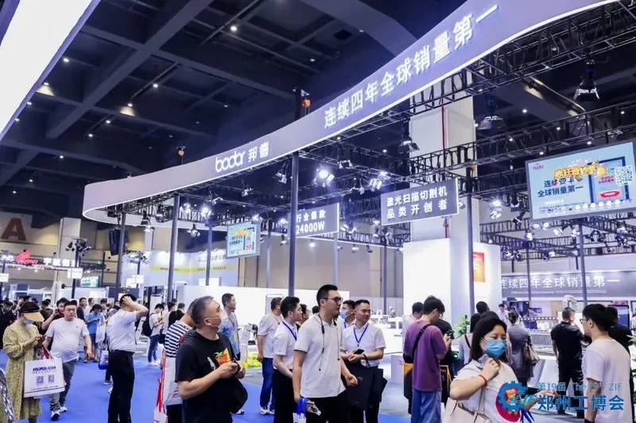
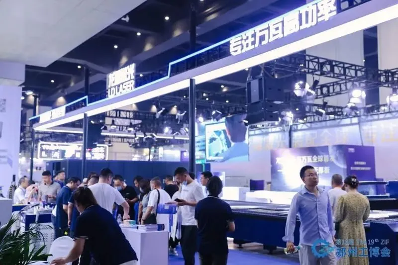
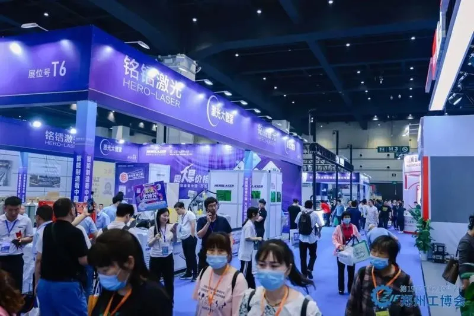
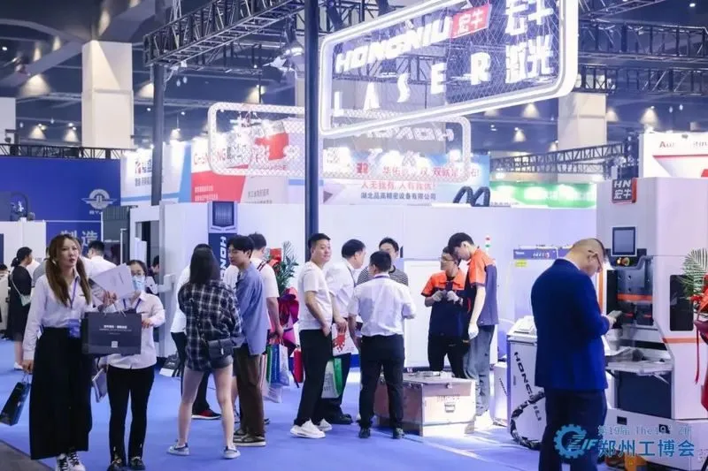
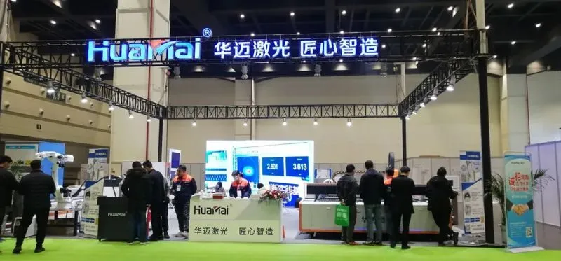

【2024郑州激光钣金展】知名品牌齐聚，引领钣金智造升级新时代
首页 / 【2024郑州激光钣金展】知名品牌齐聚，引领钣金智造升级新时代
2024郑州工博会
随着中国智能制造技术的创新与升级，激光钣金在制造业的应用中越来越广泛，我国钣金行业持续稳定发展，2023 年行业内约有 15%的企业大幅增长（利润额增长超过 10%) ，其市场规模正以每年 20%以上的速度增长，产值和销售额均持续稳定增长。新能源电池、储能、汽车、光伏、动力电池、医疗器械、金属加工、航空航天等市场的大热，将激光钣金产业推进了 黄金发展时期。钣金加工行业也逐渐向智能制造、精细加工、可视化技术方向发展。

第 20 届郑州激光钣金展将于 2024年 5月9-12日在郑州国际会展中心隆重启幕！作为中西部工业品牌大展，整合国内行业优质资源，网罗众多优质展商和观众，提供最直接、最有效的智能技术、设备和产品的商务流通与技术交流，致力于中西部制造业的发展。
风华正茂 20载，同心向未来，2024 郑州激光钣金展以 20 周年为契机，将汇聚产业力量，与众多展商共同为中部制造业转型升级助力，赋能行业发展。邦德、宏牛、龙雕、铭镭、东海、华迈等品牌企业将集中亮相展会现场，展示切割、折弯、焊接等先进生产解决方案，行业新品、爆品，满足不同应用领域的采购需求。
邦德激光
邦德激光股份有限公司（简称“邦德”）成立于2008年，是一家集研产销服四维一体的全球智能激光解决方案提供商，在全球拥有33个国籍员工2000+,设有15家海外全资子公司，为全球 180多个国家用户创造革命性价值提升体验。邦德聚焦激光切割单品类推出覆盖1500w到60000w功率段的板材、管材、卷板管一体及自动化等百余款产品，既有超高配置、超高速度、超高精度的旗舰版，也有引领行业发展的性能版，更有高质量、高性能、高保障、好体验的经济版。

主营产品：激光切割机、激光焊接机、板材切割机、管材切割机、全智动切管机等
龙雕激光
北京龙雕伟业数控设备有限公司是一家致力于生产研发高端数控激光设备的高新技术企业。北京龙雕伟业数控设备有限公司成立于2012年,2020年起龙雕激光进入快速发展期,4万瓦、5万瓦激光切割设备先后落地，助力终端用户高效生产。龙雕激光志在全球！致力于高质量、持续的满足客户需求，帮助客户成功是我们的生存法则。必须用真情热性、敬业专注和持续创新赢来信赖。着力塑造属于中国智造品牌的国际声望与全球竞争力，做全球信赖的激光设备解决方案服务商。

主营产品：激光切割机、激光切管机、手持焊接机等
铭镭激光
产品广泛应用于电工电器、手机通讯、五金制品、工具配件、精密器械、首饰饰品、眼镜钟表、集成电路、工艺礼品、塑胶模具、医疗器械等行业。随着品牌知名度提高、企业规模不断壮大，目前投资设立有深圳市铭镭激光科技有限公司、浙江铭镭激光设备有限公司、铭镭激光设备（苏州）有限公司等分子公司。铭激光将持续践行“铭激光，给您更适合的”的核心理念，给客户提供适合的产品/方案/服务。欢迎新老客户继续与我们合作，携手创造更好的未来。

主营产品：激光切割机、激光焊接机、激光打标机、激光清洗机、激光自动化系列等
宏牛激光
宏牛激光多年来专注于激光工业应用领域的行业深耕，致力于提供专业的激光工业应用解决方案。主要产品有：激光切割机、超高功率板管一体激光切割机、全自动激光切割机、上下料激光切管机，手持激光焊接机设备等。产品用户覆盖国内外180余个国家和地区。

主营产品：激光切割机、超高功率板管一体激光切割机、全自动激光切割机、上下料激光切管机等
郑州华迈智能
郑州华迈智能科技有限公司是一家专业从事智能自动化激光切割、激光焊接设备的研发、生产、销售、服务为一体的高新技术企业。凭借在自动化切割、焊接领域近二十年的积累沉淀；郑州华迈为广大客户提供最先进、前沿的平面和三维空间的切割技术及完善的金属切割、焊接整套解决方案。公司已通过ISO9001质量管理体系认证。
主要产品包括︰智能化激光切割机、智能化激光切管机、智能化三维激光切割机、智能化激光焊接机、数控切割机等，广泛应用于钣金加工、机箱电柜、电梯制造、粮机机械、环保设备、航空航天.机械制造、造船行业、石油管道、压力容器、农业机械、桥梁建筑、工程机械等近百个行业。

主营产品︰智能化激光切割机、智能化激光切管机、智能化三维激光切割机、智能化激光焊接机、数控切割机等
.......
展会现场还将举办钢结构产业会议、激光钣金行业会议，届时将邀请行业专家、激光行业各企业、科研院所、新能源汽车、光伏、钢结构、农机企业分享新技术、新应用，助力我国激光产业的发展。
会议议程
1.双碳目标下钢结构行业发展现状及展望
2.光伏行业未来发展展望--透过装备看发展
3.双碳战略与装配式智能建造新未来
4.国内钢结构行业企业发展展望及新型钢结构工艺技术
5.激光切割机助力钢结构企业高效生产
6.钢结构行业数字化转型解决方案
5月9-12日郑州国际会展中心，豫见智造！